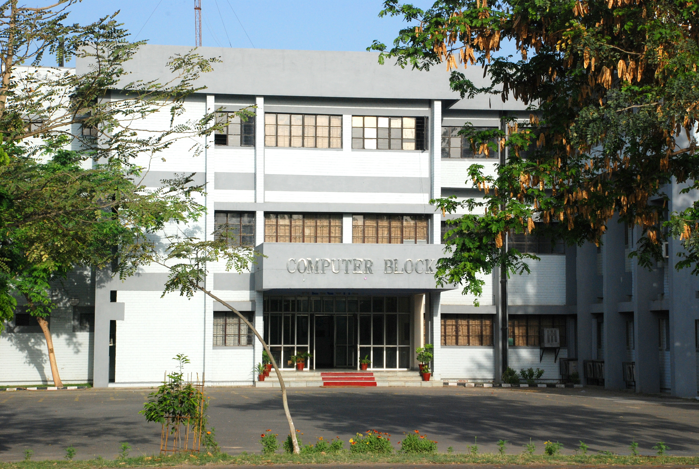

Schedular of Computer Department

This page includes the information of all the subjects that are taught to students
who are in
Computer Science & Engineering.
Head of Department :Dr. Major Singh Goraya
Office phone
:01672-253121, 01672-253122
Office fax
: 01672-253121
The Department of Computer Science & Engineering has been successfully imparting quality education at BE (Computer Science &
Engg.),BE(Information Technology), Diploma in Computer Science & Engineering, Diploma in Computer Science & Applications and Certificate in
Computer Applications. The Department has signed MoU with SCO and CISCO to run specialized courses on the state of the art technology in IT. The
faculty is actively engaged in research and development and has published number of research papers in National and International Conferences & Jour
-nals.All the laboratories in the depar-tment have been upgraded to fully functional multi-usage laboratories. All the old machines have been replaced
by new state of the art machines; the students canget full hands-on exposure to most recent and advanced software. The laboratories are fully equipped
to provide exposure to latest technologies.
The faculty of the department has organized several conferences/seminars and short term courses for the benefit of faculty, researchers and students in
the field of Information Technology.The department also organizes expert talk by eminent personalities working in the field of Computer Science &
Engineering.